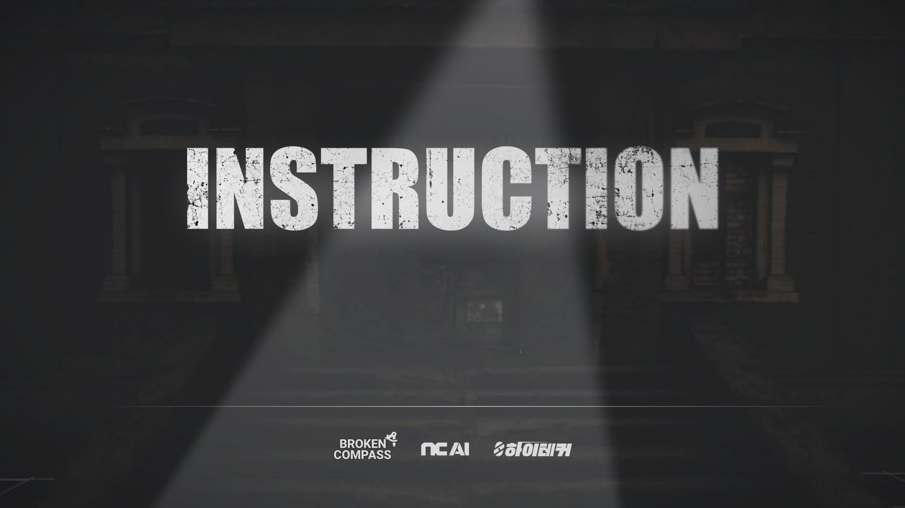
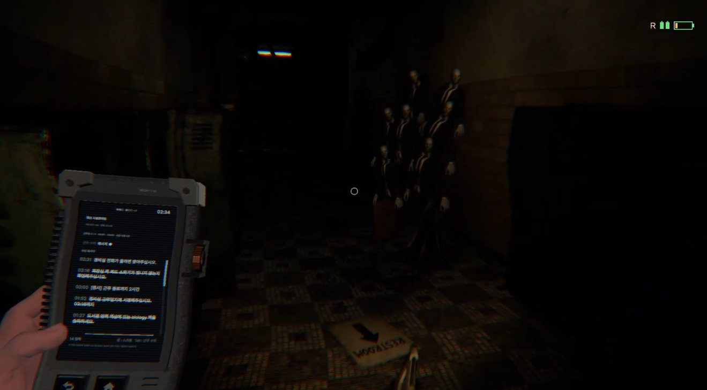

▶ 플레이 영상
INSTRUCTION 우수상 · 참여 팀 중 1위
1인칭 공포 · Unity 6
폐교의 야간 경비원이 되어 근무수칙을 지키며 다섯 밤을 버티는 공포 게임입니다. 수칙을 잘 지킬수록 회사 문자 지시가 수칙과 어긋나고, 플레이어는 무엇을 믿을지 고민하게 됩니다.
담당 및 주요 구현
담당 시스템 기획 · 프로그래밍 (수칙 판정, 공포 이벤트 배치, 공포 디렉터)
- 공포 디렉터 레프트 4 데드 2의 디렉터에서 아이디어를 얻어, 긴장도에 따라 놀람의 간격을 조절하고 조우 순서와 플레이어 유도를 관리
- 조우 설계 대표 조우 · 놀람 8종의 시작 조건과 상태 패턴 설계. 시야 밖 등장, 런타임 NavMesh, 손전등 판정 등을 사용
- 편성 재설계 플레이테스트에서 조우가 자주 안 나와, 실제로 마주쳤는지로 다시 센 시뮬레이션에서 미숙 플레이어가 조우를 다 본 판이 33%뿐이었음. 날짜별 고정 편성으로 전환
- 구조 밖에서 축 값을 넣어 시험할 수 있어야 한다는 기준을 정해 규칙 코드를 Unity와 분리하고, 근무 씬이 생기기 전부터 테스트 씬에서 축 변화를 확인하고 시뮬레이션 · 자동 테스트로 검증
- 런타임 연동 판정 결과로 조명 · CCTV · 조우 몬스터를 움직이는 Unity 코드
- AI 운영 에이전트에게 조사 · 검토 · 밤샘 QA를 맡기고, 규칙 문서와 커밋은 직접 관리
코드는 대부분 Claude가 작성했습니다. 무엇을 만들지, 어떤 기준으로 확인할지, 무엇을 받아들이고 버릴지는 제가 정했습니다.